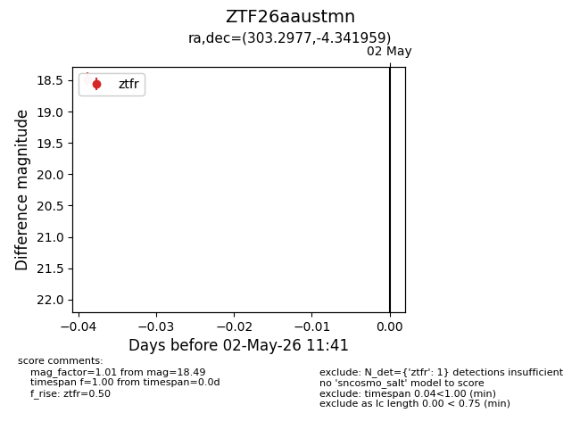
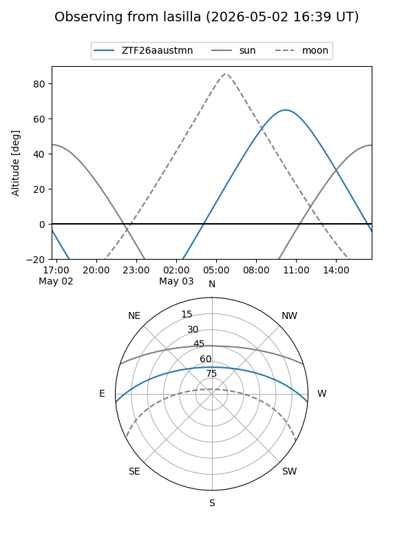
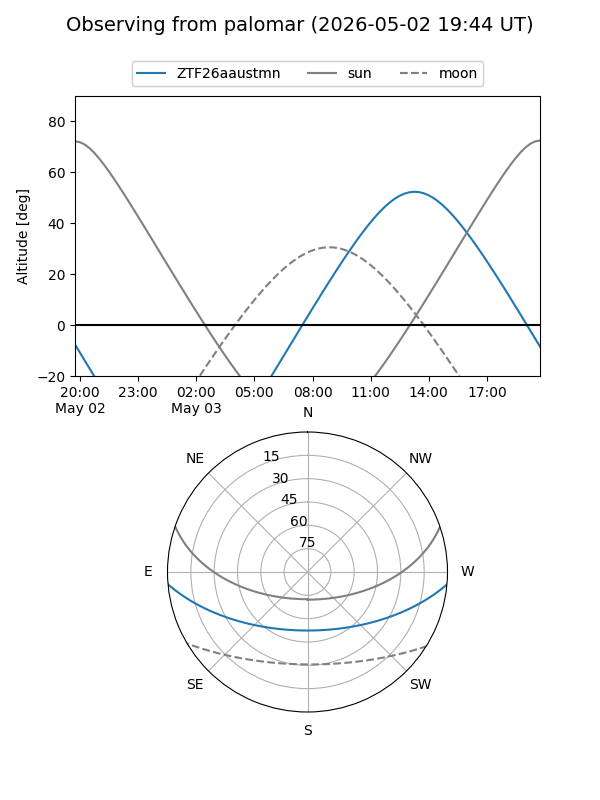

ZTF26aaustmn
Target ZTF26aaustmn at 2026-05-02 11:52
Aliases and brokers:
FINK: link
Lasair: link
ALeRCE: link
alt names
ZTF26aaustmn (ztf,fink_ztf)
Coordinates:
equatorial (ra, dec) = 303.2977,-4.34196
equatorial (HMS+DMS) = 20:13:11.45,-04:20:31.05
galactic (l, b) = (38.5183,-20.14586)
Flags:
Photometry:
last ztfr=18.49
1 ztfr detections
Lightcurve

Visibility


Additional plots